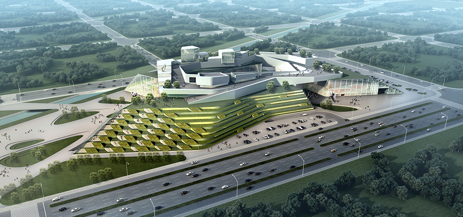

A smart city is an urban development vision to integrate multiple information and communication technology (ICT) solutions in a secure fashion to manage a city’s assets
The goal of building a smart city is to improve quality of life by using technology to improve the efficiency of services and meet residents’ needs.
ICT is used to enhance quality, performance and interactivity of urban services, to reduce costs and resource consumption and to improve contact between citizens and government.

ICT allows city officials to interact directly with the community and the city infrastructure and to monitor what is happening in the city, and how to enable a better quality of life.
Smart Buildings
Renewable Energy
Electronic Government
Intelligent Infrastructure
Public Services
Transportation Network
Smart Buildings
Smart buildings are buildings that achieve significant energy savings by taking advantage of improved technology and materials in terms of structure, appliances, electrical systems and plumbing. Smart buildings includes advanced control systems, such as lighting, security, heating, ventilation and air conditioning systems, that connect various elements to optimize savings.
Renewable Energy
Muscat smart city has very ambitious goals to decrease its carbon footprint by increasing power from renewable energy sources to reduce emissions.
Renewable energy includes electricity and heat generated from solar, wind, ocean, hydropower, biomass, geothermal resources, and biofuels and hydrogen derived from renewable resources.
Electronic Government
Information Technology (IT), Information and Communication Technologies (ICT s), and other web-based telecommunication technologies helps simplify processes and makes government information more easily accessible for public sector agencies and citizens. It also offer an increased portfolio of public services to citizens in an efficient and cost effective manner.
Intelligent Infrastructure
Intelligent infrastructure helps government and utility providers to manage water, waste water and electricy systems in safer, more efficient and eviromentally manner. It also helps city residents to directly manage their energy and resource consumption using mobile metering tools. Moreover, city satff will get real time information so appropriate actions can be taken.
Public Services
Information technology facilitate the delivery of learning content to student through smart devices. It allows students to learn at their pace, with relevant content and learning approaches.
Intelligent healthcare systems helps in promoting wellness amont citizens, real time access to patients medical information, and improve patient outcomes in hospitals and clinics.
Transportation Network
An intelligent transportation system is where all moving parts are working together as data is being shared in real time, among vehicles and infrastructure through millions of sensors embedded in street signs, traffic lights and roads. This system will allow less congestion and better, more efficient urban mobility.
Notice
This HTML template an experimental and enhanced version (v.2) of the original design. It utilises CSS3 animations, SVG files, CSS3 Media Queries and various jQuery plugins. To view the original template (v.1), please click on the button below.
 The goal of building a smart city is to improve quality of life by using technology to improve the efficiency of services and meet residents’ needs.
The goal of building a smart city is to improve quality of life by using technology to improve the efficiency of services and meet residents’ needs.